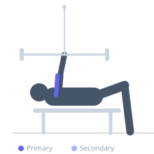
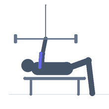

Exercise guide / Lying Cable Curl
Lying Cable Curl
The lying cable curl is performed face-up on a bench placed close to a low cable pulley, with both hands gripping a straight bar or EZ-bar attached to the cable. Because the lifter is horizontal, the cable pull direction creates maximum bicep tension in the stretched (extended arm) position — the opposite of standing curls which are hardest near lockout. This makes it valuable for training the bicep in its lengthened position for hypertrophy.
Primary muscles
biceps brachii long head
biceps brachii short head
Secondary muscles
brachialis
Equipment
Cable Machine (Low Pulley)
Flat Bench


Starting position
- Place a flat bench parallel to and close to a low cable pulley. Lie face-up with the head nearest the pulley. Grasp a straight bar attached to the cable.
Setup
- Position the bench so the cable pulls the arms toward the pulley when extended. Ensure the cable travels along the floor to the pulley smoothly.
Steps
- Step 1: Lie supine, arms extended toward the pulley, bar in supinated grip.
- Step 2: Curl the bar toward the face by flexing the elbows.
- Step 3: Hold at the peak for one second.
- Step 4: Return to the extended position, feeling the stretch in the biceps.
Coaching cues
- Feel the stretch at the bottom
- Upper arms stay on the bench
- Control the negative
Breathing
- Exhale on the curl, inhale on the return.
Range of motion
- Full extension with stretch at the bottom, full curl at the top.
Tempo
- 2-1-3-0
Common mistakes
- Lifting the head off the bench
- Upper arms rising off the bench on the curl
- Rushing the eccentric
Safety
- Keep upper arms pressed to the bench throughout
Training
- hypertrophy: 10–15 reps
- hypertrophy: 3–4 sets
- Rest: {'hypertrophy': 60}